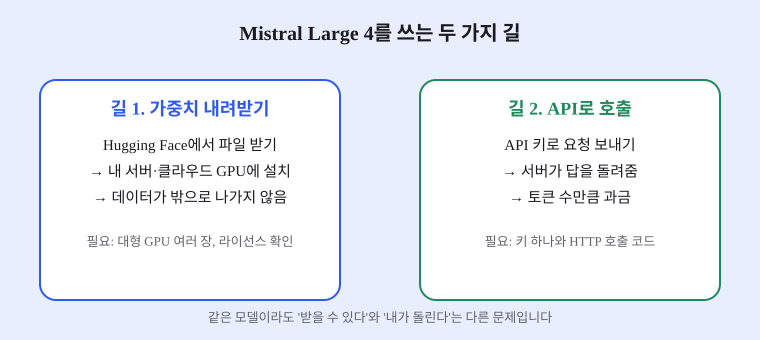
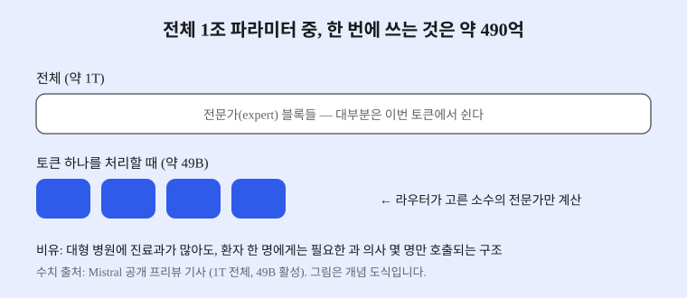

Mistral Large 4: 1조 파라미터 오픈 웨이트 모델, 입문 개발자가 알아야 할 것
- 프랑스 Mistral AI가 전체 약 1조(1T) 파라미터 규모의 오픈 웨이트 모델 Mistral Large 4를 내놓았습니다.
- 전체 파라미터 중 토큰 하나당 약 490억(49B)만 쓰는 MoE 구조이며, 컨텍스트는 100만 토큰, 입력은 텍스트와 이미지를 받습니다.
- 입문 개발자에게 핵심은 '가중치를 받을 수 있는 모델'과 '내가 직접 돌릴 수 있는 모델'은 다르다는 점, 그리고 API로 먼저 써 볼 수 있다는 점입니다.
2026년 10월 초 Mistral AI는 Mistral Large 4의 공개 프리뷰를 열었습니다. 같은 달 말에는 가중치(모델을 이루는 숫자 덩어리)가 Hugging Face에 올라왔다고 여러 매체가 전했습니다. 이름만 보면 '또 하나의 큰 모델'처럼 보이지만, 구조와 공개 방식을 나눠 보면 입문자가 배울 것이 꽤 많습니다.
01한눈에 보기
'1조 파라미터'는 모델 안의 조절 손잡이(가중치) 개수가 약 1조 개라는 뜻입니다. 그런데 Mistral Large 4는 이 손잡이를 전부 매번 돌리지 않습니다. 대형 병원에 진료과가 수십 개 있어도 환자 한 명을 볼 때는 필요한 과 의사 몇 명만 호출되는 것과 같은 방식입니다. 이 구조를 MoE(Mixture of Experts, 전문가 혼합)라고 부릅니다. 보도에 따르면 토큰 하나를 처리할 때 쓰이는 양은 약 490억(49B)입니다.

· 오픈 웨이트: 학습된 가중치 파일을 누구나 내려받을 수 있게 공개한 것. 소스 코드 공개와는 다릅니다.
· 컨텍스트 윈도우: 모델이 한 번에 읽을 수 있는 글의 길이. 100만 토큰은 대략 책 여러 권 분량입니다.
02어떻게 동작하나요
처리 순서는 세 단계로 보면 쉽습니다. 첫째, 입력 글을 토큰(잘게 쪼갠 글자 조각) 단위로 나눕니다. 둘째, 라우터(배정 담당)라는 작은 부분이 이 토큰에 어떤 전문가가 맞는지 골라 줍니다. 셋째, 골라진 전문가들의 계산 결과를 합쳐 다음 토큰을 만듭니다. 전체 모델 중 일부만 깨어나기 때문에, 같은 크기의 일반(dense) 모델보다 한 번 답할 때 드는 계산량이 적다는 것이 MoE의 장점입니다.
학습 규모도 기사마다 같은 이야기를 합니다. 보도에 따르면 Mistral은 자체 유럽 데이터센터에서 약 두 달 동안 NVIDIA Grace Blackwell 칩 4,000장으로 학습했습니다. 입력은 텍스트와 이미지를 받고, 컨텍스트는 100만 토큰으로 알려졌습니다.

03왜 지금 화제인가요
순서를 정리하면 이렇습니다. 10월 초에 공개 프리뷰가 열려 API로 먼저 써 볼 수 있었고, 10월 말에 가중치 공개가 이어졌습니다. 보도 날짜는 27일과 29일로 엇갈려서 이 글에서는 '10월 말'로만 적습니다. Mistral은 이 모델이 중국 밖에서 가장 강한 오픈 웨이트 모델이라고 주장했고, 여러 벤치마크 점수도 함께 공개했습니다. 다만 이 점수는 대부분 회사가 직접 보고한 수치입니다.
이번 조사에서 개발자 커뮤니티(Reddit, Hacker News 등)의 구체적인 반응 글은 작성 시각을 확인하지 못해 인용하지 않았습니다.
04관련 나라·기업
| 구분 | 이름 | 어떤 관련이 있나 |
|---|---|---|
| 기업 | Mistral AI | 모델 개발사. 프리뷰 공개와 API 제공을 담당 |
| 기업 | NVIDIA | 학습에 쓰인 Grace Blackwell 칩을 공급 (보도 기준) |
| 기업 | Hugging Face | 가중치 파일을 내려받을 수 있게 호스팅하는 플랫폼 |
| 나라 | 프랑스 | Mistral AI의 본사 소재지이자 유럽 데이터센터 학습 기준 |
05기존 방식과 무엇이 다른가
| 비교 항목 | 기존 일반(dense) 모델 | Mistral Large 4 |
|---|---|---|
| 매 토큰마다 쓰는 파라미터 | 전체 전부 | 전체 약 1T 중 약 49B (보도 기준) |
| 가중치 접근 | 대부분 API만 제공 | Hugging Face에서 내려받기 가능 (라이선스 조건 있음) |
| API 가격 (입력/출력, 100만 토큰당) | 제공사마다 다름 | $0.70 / $2.10 (캐시 입력 $0.07, 보도 기준) |
| 입문자가 쓰는 첫 방법 | API 키 발급 후 호출 | 같은 API 호출 방식, 가중치는 나중에 선택 |
06직접 해 보기
이 모델은 개인 PC에서 바로 돌려 보기에는 크기가 너무 큽니다. 그래서 오늘 해 볼 첫 걸음은 실행이 아니라 '읽고 계산해 보기'입니다.
1단계. 공식 문서에서 API 사용 방법 찾기
Mistral 공식 사이트의 개발자 문서에서 API 키를 발급받는 메뉴와 호출 방법 페이지를 찾아 두세요. 이 글에서는 구체적인 명령어를 확인하지 못해 적지 않았습니다.
2단계. 비용 계산해 보기
내가 만들 서비스가 하루에 입력 100만 토큰, 출력 20만 토큰을 쓴다면 보도된 가격으로 하루 비용이 얼마인지 손으로 계산해 봅니다. 입력 $0.70 + 출력 $2.10 × 0.2 = 약 $1.12가 나옵니다.
3단계. 라이선스 읽기
Hugging Face의 모델 카드에서 라이선스 조항을 직접 읽어 보세요. 보도에 따르면 이 모델의 라이선스는 'Mistral Ecosystem Open-Weight License(수정된 MIT)'이며, 모델을 서비스로 제공하는 업체는 상업 라이선스가 필요합니다.
07주의할 점과 한계
- 벤치마크 점수는 대부분 Mistral이 직접 보고한 수치입니다. 독립 평가 점수와 함께 보고, 특정 점수 하나만 보고 판단하지 않는 편이 좋습니다.
- 가중치 공개 날짜가 27일과 29일로 보도마다 다릅니다. 정확한 날짜는 Hugging Face 모델 페이지의 게시 기록으로 확인하세요.
- '오픈 웨이트'라고 해서 아무 제한 없이 쓸 수 있는 것은 아닙니다. 라이선스 조건을 먼저 확인하세요.
- 1T 규모 가중치를 실제로 실행하려면 대형 GPU 여러 장이 필요할 가능성이 큽니다. 개인 PC에서의 실행은 현실적으로 어렵다고 보는 것이 안전합니다(추정).
08정리
Mistral Large 4의 핵심은 '1조 파라미터'라는 숫자보다 MoE 구조입니다. 전체 크기는 크지만 한 번에 쓰는 양은 약 49B로 줄여서, 큰 모델의 능력을 상대적으로 적은 계산으로 얻으려는 방향을 보여 줍니다. 입문 개발자는 이 구조 덕분에 모델을 '돌리는 것'과 '호출하는 것'을 나눠서 생각해야 합니다.
처음에는 API로 작은 실험을 해 보고, 비용과 라이선스를 계산한 뒤에 가중치를 직접 다룰지 결정해도 늦지 않습니다. 발표 수치와 독립 평가를 나란히 보는 습관도 이 모델을 통해 함께 익혀 보세요.
09참고한 글
- Mistral Large 4 debuts as 1T-parameter open-weight model VKTR · 2026.10.29
- Mistral libère les poids de Large 4 (1 T, 49 B actifs) entraîné sur 4 000 Grace Blackwell AI Weekly · 2026.10 (27일 공개 언급)
- Mistral launches public preview of AI model with 1 trillion parameters ForkLog · 2026.10.06
- Mistral AI 공식 게시물 (프리뷰 발표; 포럼 기사에 인용된 링크이며 직접 열어 확인하지는 못함) Mistral AI · 2026.10